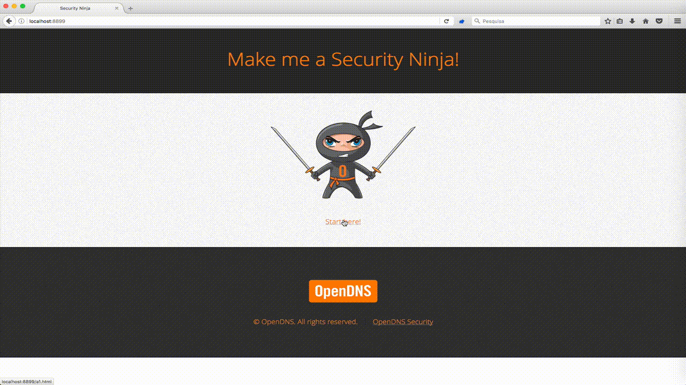

Sensitive Data Exposure
This vulnerability can occur when an application does not, adequately, protect sensitive data such as passwords, sessions tokens, credit card data and more, from being leaked.
Is my application vulnerable to this flaw?
First there's a need to determine which data is sensitive enough to require extra protection.
For this type of data consider the following:
- Is any of this data stored in clear text, including backups?
- Is any of this data transmitted in clear text, either internally or externally?
- Are any old/weak cryptographic algorithms used?
- Are weak cryptographic keys generated, or is proper key management or rotation missing?
- Are any browser security directives or headers missing when sensitive data is provided by/sent to the browser?
- For more information visit ASVS Crypto, Data Protection, SSL
Security Ninjas Resolution
How to prevent
Trying to prevent this kind of flaws the following set of rules should be met.
- Make sure all sensitive data is encrypted either stored or being transmitted in a way that it's secure agains this kind of threads.
- Don't store sensitive data unnecessarily. Discard it ASAP. If you don't have it, it can't be stolen.
- Ensure strong standard algorithms and strong keys are used. Proper key management is also to be used.
- Ensure passwords are stored with a specifically designed algorithm. Check PBKDF2
- Disable autocomplete on forms collecting sensitive data and disable caching for pages that contain sensitive data.